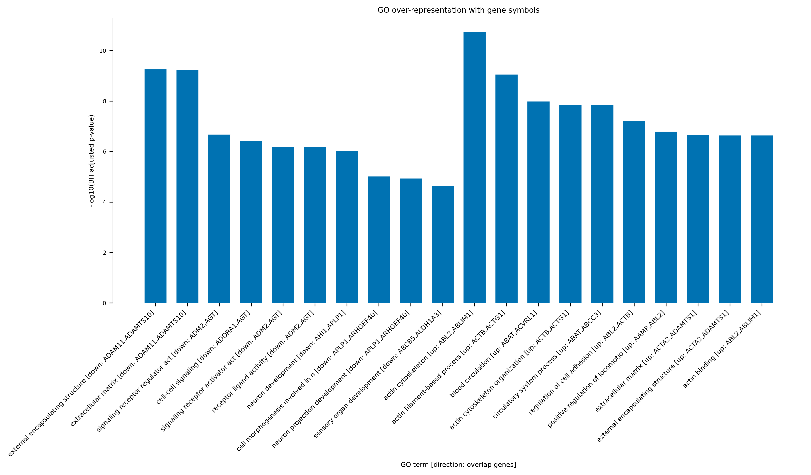
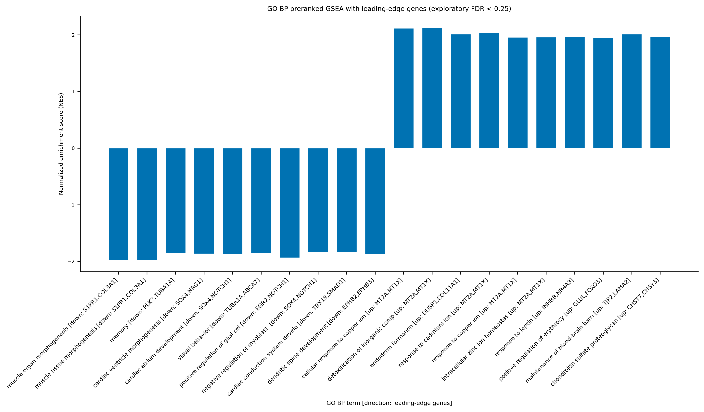
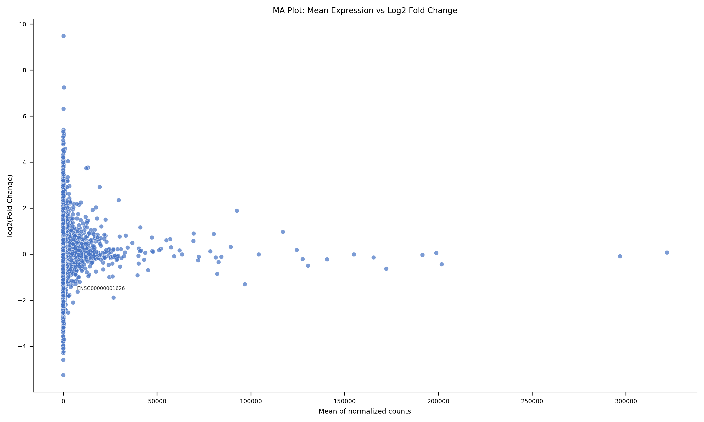
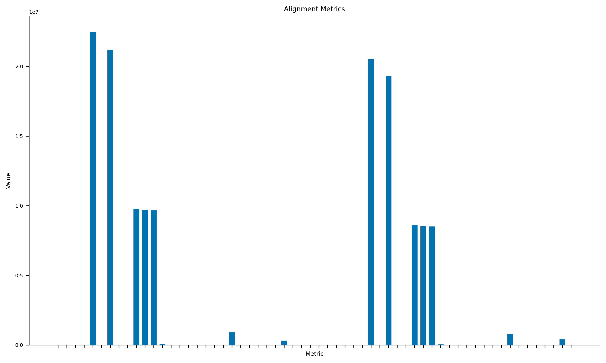
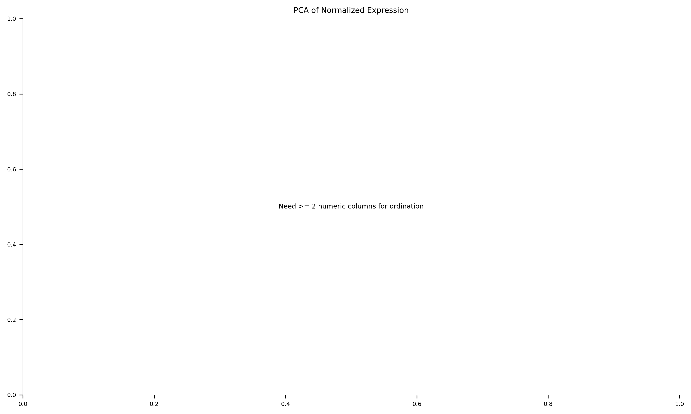
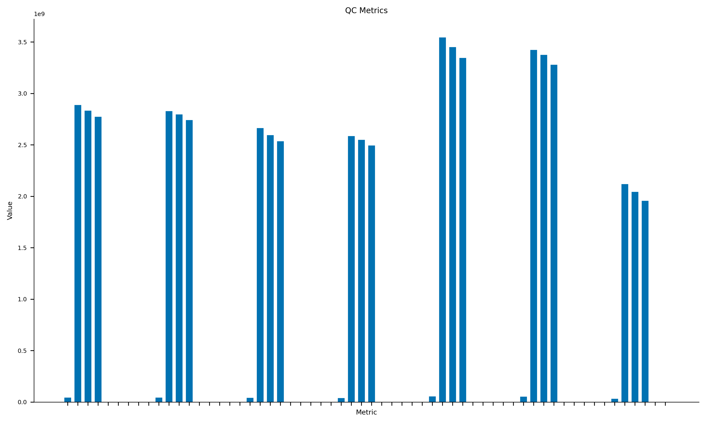
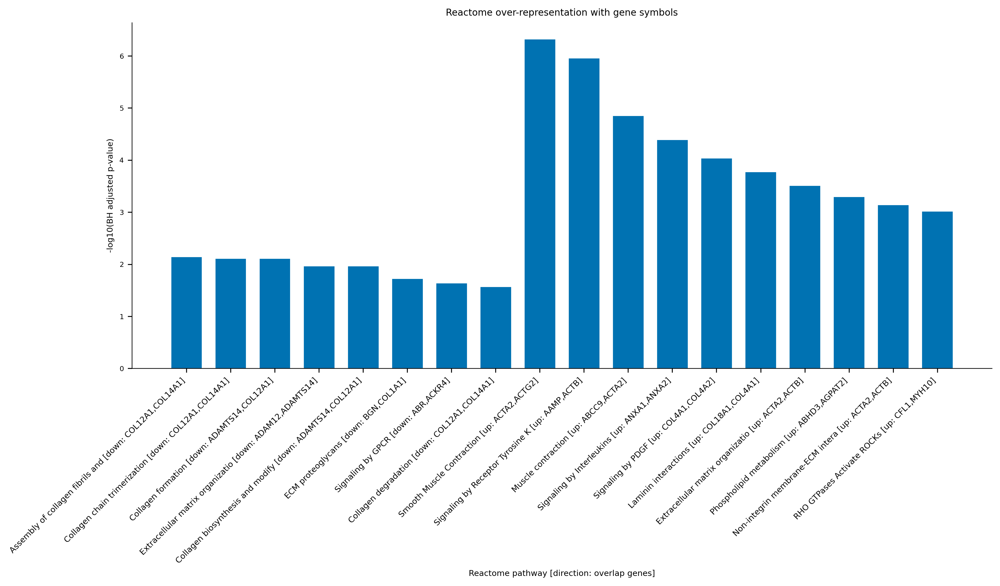
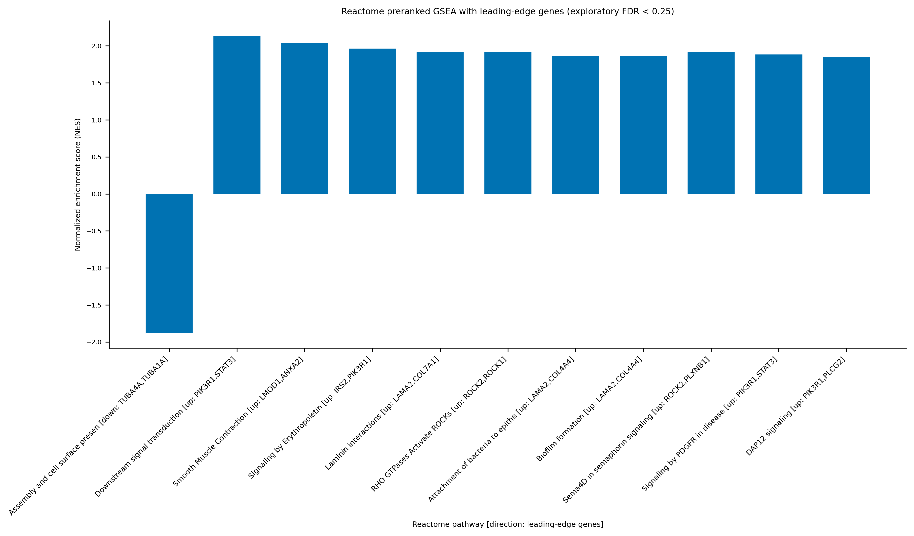
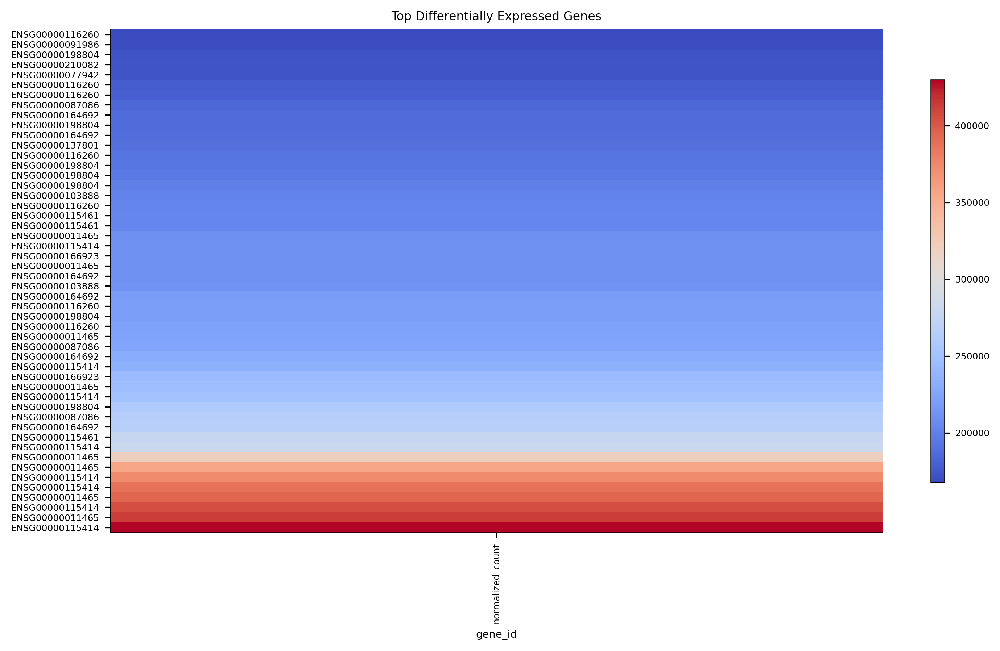
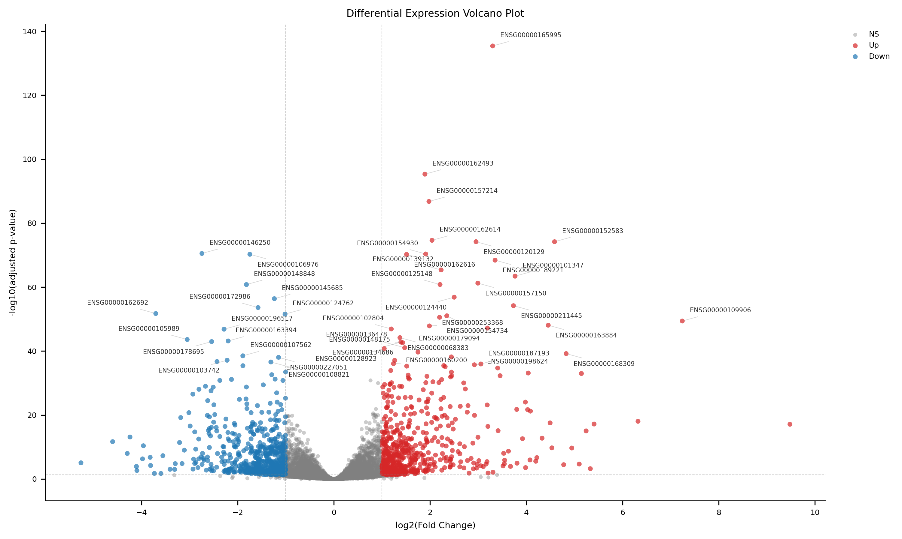

Executive Summary
Analysis type: rnaseq_expression
Planned steps: 27
Tools used: fastp, star, featurecounts, fastp, star, featurecounts, fastp, star, featurecounts, fastp, star, featurecounts, fastp, star, featurecounts, fastp, star, featurecounts, fastp, star, featurecounts, fastp, star, featurecounts, build_count_matrix, deseq2, rnaseq_enrichment
Workflow Overview
| Step | Tool | Category | Sample |
|---|---|---|---|
| SRR1039508_qc_fastp | fastp | qc | SRR1039508 |
| SRR1039508_alignment_star | star | alignment | SRR1039508 |
| SRR1039508_expression_featurecounts | featurecounts | expression | SRR1039508 |
| SRR1039509_qc_fastp | fastp | qc | SRR1039509 |
| SRR1039509_alignment_star | star | alignment | SRR1039509 |
| SRR1039509_expression_featurecounts | featurecounts | expression | SRR1039509 |
| SRR1039512_qc_fastp | fastp | qc | SRR1039512 |
| SRR1039512_alignment_star | star | alignment | SRR1039512 |
| SRR1039512_expression_featurecounts | featurecounts | expression | SRR1039512 |
| SRR1039513_qc_fastp | fastp | qc | SRR1039513 |
| SRR1039513_alignment_star | star | alignment | SRR1039513 |
| SRR1039513_expression_featurecounts | featurecounts | expression | SRR1039513 |
| SRR1039516_qc_fastp | fastp | qc | SRR1039516 |
| SRR1039516_alignment_star | star | alignment | SRR1039516 |
| SRR1039516_expression_featurecounts | featurecounts | expression | SRR1039516 |
| SRR1039517_qc_fastp | fastp | qc | SRR1039517 |
| SRR1039517_alignment_star | star | alignment | SRR1039517 |
| SRR1039517_expression_featurecounts | featurecounts | expression | SRR1039517 |
| SRR1039520_qc_fastp | fastp | qc | SRR1039520 |
| SRR1039520_alignment_star | star | alignment | SRR1039520 |
| SRR1039520_expression_featurecounts | featurecounts | expression | SRR1039520 |
| SRR1039521_qc_fastp | fastp | qc | SRR1039521 |
| SRR1039521_alignment_star | star | alignment | SRR1039521 |
| SRR1039521_expression_featurecounts | featurecounts | expression | SRR1039521 |
| build_matrix | build_count_matrix | preprocessing | None |
| de_deseq2 | deseq2 | differential_expression | None |
| enrichment_offline | rnaseq_enrichment | enrichment | None |
Standard Tables
| Table | Rows | Path |
|---|---|---|
alignment_summary.tsv | 256 | /root/autodl-tmp/abi-real-data/results/rnaseq_airway_abi_test_20260809_12vcpu_62gb_retry1/tables/alignment_summary.tsv |
annotated_differential_expression.tsv | 16019 | /root/autodl-tmp/abi-real-data/results/rnaseq_airway_abi_test_20260809_12vcpu_62gb_retry1/tables/annotated_differential_expression.tsv |
count_matrix.tsv | 509416 | /root/autodl-tmp/abi-real-data/results/rnaseq_airway_abi_test_20260809_12vcpu_62gb_retry1/tables/count_matrix.tsv |
differential_expression.tsv | 16019 | /root/autodl-tmp/abi-real-data/results/rnaseq_airway_abi_test_20260809_12vcpu_62gb_retry1/tables/differential_expression.tsv |
gene_expression.tsv | 509416 | /root/autodl-tmp/abi-real-data/results/rnaseq_airway_abi_test_20260809_12vcpu_62gb_retry1/tables/gene_expression.tsv |
go_gsea.tsv | 3560 | /root/autodl-tmp/abi-real-data/results/rnaseq_airway_abi_test_20260809_12vcpu_62gb_retry1/tables/go_gsea.tsv |
go_gsea_plot.tsv | 20 | /root/autodl-tmp/abi-real-data/results/rnaseq_airway_abi_test_20260809_12vcpu_62gb_retry1/tables/go_gsea_plot.tsv |
go_overrepresentation.tsv | 9726 | /root/autodl-tmp/abi-real-data/results/rnaseq_airway_abi_test_20260809_12vcpu_62gb_retry1/tables/go_overrepresentation.tsv |
go_overrepresentation_plot.tsv | 20 | /root/autodl-tmp/abi-real-data/results/rnaseq_airway_abi_test_20260809_12vcpu_62gb_retry1/tables/go_overrepresentation_plot.tsv |
normalized_expression.tsv | 128152 | /root/autodl-tmp/abi-real-data/results/rnaseq_airway_abi_test_20260809_12vcpu_62gb_retry1/tables/normalized_expression.tsv |
qc_summary.tsv | 144 | /root/autodl-tmp/abi-real-data/results/rnaseq_airway_abi_test_20260809_12vcpu_62gb_retry1/tables/qc_summary.tsv |
reactome_gsea.tsv | 1248 | /root/autodl-tmp/abi-real-data/results/rnaseq_airway_abi_test_20260809_12vcpu_62gb_retry1/tables/reactome_gsea.tsv |
reactome_gsea_plot.tsv | 11 | /root/autodl-tmp/abi-real-data/results/rnaseq_airway_abi_test_20260809_12vcpu_62gb_retry1/tables/reactome_gsea_plot.tsv |
reactome_overrepresentation.tsv | 2496 | /root/autodl-tmp/abi-real-data/results/rnaseq_airway_abi_test_20260809_12vcpu_62gb_retry1/tables/reactome_overrepresentation.tsv |
reactome_overrepresentation_plot.tsv | 18 | /root/autodl-tmp/abi-real-data/results/rnaseq_airway_abi_test_20260809_12vcpu_62gb_retry1/tables/reactome_overrepresentation_plot.tsv |
Figures










Methods
# RNA-seq Gene Expression ABI Report — Methods — rnaseq_airway_dex_untreated_retry5_parity Analysis type: `rnaseq_expression` ## Pipeline Steps | Step | Tool | Category | Sample | | --- | --- | --- | --- | | qc | `fastp` | qc | SRR1039508 | | alignment | `star` | alignment | SRR1039508 | | expression | `featurecounts` | expression | SRR1039508 | | qc | `fastp` | qc | SRR1039509 | | alignment | `star` | alignment | SRR1039509 | | expression | `featurecounts` | expression | SRR1039509 | | qc | `fastp` | qc | SRR1039512 | | alignment | `star` | alignment | SRR1039512 | | expression | `featurecounts` | expression | SRR1039512 | | qc | `fastp` | qc | SRR1039513 | | alignment | `star` | alignment | SRR1039513 | | expression | `featurecounts` | expression | SRR1039513 | | qc | `fastp` | qc | SRR1039516 | | alignment | `star` | alignment | SRR1039516 | | expression | `featurecounts` | expression | SRR1039516 | | qc | `fastp` | qc | SRR1039517 | | alignment | `star` | alignment | SRR1039517 | | expression | `featurecounts` | expression | SRR1039517 | | qc | `fastp` | qc | SRR1039520 | | alignment | `star` | alignment | SRR1039520 | | expression | `featurecounts` | expression | SRR1039520 | | qc | `fastp` | qc | SRR1039521 | | alignment | `star` | alignment | SRR1039521 | | expression | `featurecounts` | expression | SRR1039521 | | preprocessing | `build_count_matrix` | preprocessing | None | | differential_expression | `deseq2` | differential_expression | None | | enrichment | `rnaseq_enrichment` | enrichment | None | ## Tool Versions | Tool | Version | Command | | --- | --- | --- | | `build_count_matrix` | Python 3.10.20 | `python` | | `deseq2` | 1.50.2 | `Rscript` | | `fastp` | fastp 1.3.5 | `fastp` | | `featurecounts` | featureCounts v2.1.1 | `featureCounts` | | `rnaseq_enrichment` | not_configured | `python` | | `star` | 2.7.11b | `STAR` | ## Executed Commands - **SRR1039508_qc_fastp**: `fastp -i /root/autodl-tmp/abi-real-data/raw/rnaseq_airway_dex_untreated/SRR1039508_1.fastq.gz -I /root/autodl-tmp/abi-real-data/raw/rnaseq_airway_dex_untreated/SRR1039508_2.fastq.gz -o /root/autodl-tmp/abi-real-data/results/rnaseq_airway_abi_test_20260809_12vcpu_62gb_retry1/01_qc/SRR1039508/SRR1039508_R1.clean.fastq.gz -O /root/autodl-tmp/abi-real-data/results/rnaseq_airway_abi_test_20260809_12vcpu_62gb_retry1/01_qc/SRR1039508/SRR1039508_R2.clean.fastq.gz --thread 12 --html /root/autodl-tmp/abi-real-data/results/rnaseq_airway_abi_test_20260809_12vcpu_62gb_retry1/01_qc/SRR1039508/SRR1039508.fastp.html --json /root/autodl-tmp/abi-real-data/results/rnaseq_airway_abi_test_20260809_12vcpu_62gb_retry1/01_qc/SRR1039508/SRR1039508.fastp.json` - **SRR1039508_alignment_star**: `STAR --runThreadN 12 --genomeDir /root/autodl-tmp/abi-real-data/references/airway_grch37_75/star_index_retry1 --readFilesIn /root/autodl-tmp/abi-real-data/results/rnaseq_airway_abi_test_20260809_12vcpu_62gb_retry1/01_qc/SRR1039508/SRR1039508_R1.clean.fastq.gz /root/autodl-tmp/abi-real-data/results/rnaseq_airway_abi_test_20260809_12vcpu_62gb_retry1/01_qc/SRR1039508/SRR1039508_R2.clean.fastq.gz --readFilesCommand zcat --outSAMtype BAM SortedByCoordinate --outFileNamePrefix /root/autodl-tmp/abi-real-data/results/rnaseq_airway_abi_test_20260809_12vcpu_62gb_retry1/02_alignment/SRR1039508/SRR1039508.` - **SRR1039508_expression_featurecounts**: `sh -c 'tmp="$3.stderr.tmp"; if featureCounts -T "$1" -p --countReadPairs -a "$2" -o "$3" "$4" 2>"$tmp"; then cat "$tmp" >&2; rm -f "$tmp"; exit 0; fi; rc=$?; if grep -q "No paired-end reads were detected" "$tmp"; then cat "$tmp" >&2; echo "ABI: retrying featureCounts without -p because BAM has no paired-end flags" >&2; rm -f "$tmp"; featureCounts -T "$1" -a "$2" -o "$3" "$4"; else cat "$tmp" >&2; rm -f "$tmp"; exit "$rc"; fi' featurecounts 12 /root/autodl-tmp/abi-real-data/references/airway_grch37_75/Homo_sapiens.GRCh37.75.gtf /root/autodl-tmp/abi-real-data/results/rnaseq_airway_abi_test_20260809_12vcpu_62gb_retry1/03_expression/SRR1039508/SRR1039508.featureCounts.txt /root/autodl-tmp/abi-real-data/results/rnaseq_airway_abi_test_20260809_12vcpu_62gb_retry1/02_alignment/SRR1039508/SRR1039508.Aligned.sortedByCoord.out.bam` - **SRR1039509_qc_fastp**: `fastp -i /root/autodl-tmp/abi-real-data/raw/rnaseq_airway_dex_untreated/SRR1039509_1.fastq.gz -I /root/autodl-tmp/abi-real-data/raw/rnaseq_airway_dex_untreated/SRR1039509_2.fastq.gz -o /root/autodl-tmp/abi-real-data/results/rnaseq_airway_abi_test_20260809_12vcpu_62gb_retry1/01_qc/SRR1039509/SRR1039509_R1.clean.fastq.gz -O /root/autodl-tmp/abi-real-data/results/rnaseq_airway_abi_test_20260809_12vcpu_62gb_retry1/01_qc/SRR1039509/SRR1039509_R2.clean.fastq.gz --thread 12 --html /root/autodl-tmp/abi-real-data/results/rnaseq_airway_abi_test_20260809_12vcpu_62gb_retry1/01_qc/SRR1039509/SRR1039509.fastp.html --json /root/autodl-tmp/abi-real-data/results/rnaseq_airway_abi_test_20260809_12vcpu_62gb_retry1/01_qc/SRR1039509/SRR1039509.fastp.json` - **SRR1039509_alignment_star**: `STAR --runThreadN 12 --genomeDir /root/autodl-tmp/abi-real-data/references/airway_grch37_75/star_index_retry1 --readFilesIn /root/autodl-tmp/abi-real-data/results/rnaseq_airway_abi_test_20260809_12vcpu_62gb_retry1/01_qc/SRR1039509/SRR1039509_R1.clean.fastq.gz /root/autodl-tmp/abi-real-data/results/rnaseq_airway_abi_test_20260809_12vcpu_62gb_retry1/01_qc/SRR1039509/SRR1039509_R2.clean.fastq.gz --readFilesCommand zcat --outSAMtype BAM SortedByCoordinate --outFileNamePrefix /root/autodl-tmp/abi-real-data/results/rnaseq_airway_abi_test_20260809_12vcpu_62gb_retry1/02_alignment/SRR1039509/SRR1039509.` - **SRR1039509_expression_featurecounts**: `sh -c 'tmp="$3.stderr.tmp"; if featureCounts -T "$1" -p --countReadPairs -a "$2" -o "$3" "$4" 2>"$tmp"; then cat "$tmp" >&2; rm -f "$tmp"; exit 0; fi; rc=$?; if grep -q "No paired-end reads were detected" "$tmp"; then cat "$tmp" >&2; echo "ABI: retrying featureCounts without -p because BAM has no paired-end flags" >&2; rm -f "$tmp"; featureCounts -T "$1" -a "$2" -o "$3" "$4"; else cat "$tmp" >&2; rm -f "$tmp"; exit "$rc"; fi' featurecounts 12 /root/autodl-tmp/abi-real-data/references/airway_grch37_75/Homo_sapiens.GRCh37.75.gtf /root/autodl-tmp/abi-real-data/results/rnaseq_airway_abi_test_20260809_12vcpu_62gb_retry1/03_expression/SRR1039509/SRR1039509.featureCounts.txt /root/autodl-tmp/abi-real-data/results/rnaseq_airway_abi_test_20260809_12vcpu_62gb_retry1/02_alignment/SRR1039509/SRR1039509.Aligned.sortedByCoord.out.bam` - **SRR1039512_qc_fastp**: `fastp -i /root/autodl-tmp/abi-real-data/raw/rnaseq_airway_dex_untreated/SRR1039512_1.fastq.gz -I /root/autodl-tmp/abi-real-data/raw/rnaseq_airway_dex_untreated/SRR1039512_2.fastq.gz -o /root/autodl-tmp/abi-real-data/results/rnaseq_airway_abi_test_20260809_12vcpu_62gb_retry1/01_qc/SRR1039512/SRR1039512_R1.clean.fastq.gz -O /root/autodl-tmp/abi-real-data/results/rnaseq_airway_abi_test_20260809_12vcpu_62gb_retry1/01_qc/SRR1039512/SRR1039512_R2.clean.fastq.gz --thread 12 --html /root/autodl-tmp/abi-real-data/results/rnaseq_airway_abi_test_20260809_12vcpu_62gb_retry1/01_qc/SRR1039512/SRR1039512.fastp.html --json /root/autodl-tmp/abi-real-data/results/rnaseq_airway_abi_test_20260809_12vcpu_62gb_retry1/01_qc/SRR1039512/SRR1039512.fastp.json` - **SRR1039512_alignment_star**: `STAR --runThreadN 12 --genomeDir /root/autodl-tmp/abi-real-data/references/airway_grch37_75/star_index_retry1 --readFilesIn /root/autodl-tmp/abi-real-data/results/rnaseq_airway_abi_test_20260809_12vcpu_62gb_retry1/01_qc/SRR1039512/SRR1039512_R1.clean.fastq.gz /root/autodl-tmp/abi-real-data/results/rnaseq_airway_abi_test_20260809_12vcpu_62gb_retry1/01_qc/SRR1039512/SRR1039512_R2.clean.fastq.gz --readFilesCommand zcat --outSAMtype BAM SortedByCoordinate --outFileNamePrefix /root/autodl-tmp/abi-real-data/results/rnaseq_airway_abi_test_20260809_12vcpu_62gb_retry1/02_alignment/SRR1039512/SRR1039512.` - **SRR1039512_expression_featurecounts**: `sh -c 'tmp="$3.stderr.tmp"; if featureCounts -T "$1" -p --countReadPairs -a "$2" -o "$3" "$4" 2>"$tmp"; then cat "$tmp" >&2; rm -f "$tmp"; exit 0; fi; rc=$?; if grep -q "No paired-end reads were detected" "$tmp"; then cat "$tmp" >&2; echo "ABI: retrying featureCounts without -p because BAM has no paired-end flags" >&2; rm -f "$tmp"; featureCounts -T "$1" -a "$2" -o "$3" "$4"; else cat "$tmp" >&2; rm -f "$tmp"; exit "$rc"; fi' featurecounts 12 /root/autodl-tmp/abi-real-data/references/airway_grch37_75/Homo_sapiens.GRCh37.75.gtf /root/autodl-tmp/abi-real-data/results/rnaseq_airway_abi_test_20260809_12vcpu_62gb_retry1/03_expression/SRR1039512/SRR1039512.featureCounts.txt /root/autodl-tmp/abi-real-data/results/rnaseq_airway_abi_test_20260809_12vcpu_62gb_retry1/02_alignment/SRR1039512/SRR1039512.Aligned.sortedByCoord.out.bam` - **SRR1039513_qc_fastp**: `fastp -i /root/autodl-tmp/abi-real-data/raw/rnaseq_airway_dex_untreated/SRR1039513_1.fastq.gz -I /root/autodl-tmp/abi-real-data/raw/rnaseq_airway_dex_untreated/SRR1039513_2.fastq.gz -o /root/autodl-tmp/abi-real-data/results/rnaseq_airway_abi_test_20260809_12vcpu_62gb_retry1/01_qc/SRR1039513/SRR1039513_R1.clean.fastq.gz -O /root/autodl-tmp/abi-real-data/results/rnaseq_airway_abi_test_20260809_12vcpu_62gb_retry1/01_qc/SRR1039513/SRR1039513_R2.clean.fastq.gz --thread 12 --html /root/autodl-tmp/abi-real-data/results/rnaseq_airway_abi_test_20260809_12vcpu_62gb_retry1/01_qc/SRR1039513/SRR1039513.fastp.html --json /root/autodl-tmp/abi-real-data/results/rnaseq_airway_abi_test_20260809_12vcpu_62gb_retry1/01_qc/SRR1039513/SRR1039513.fastp.json` - **SRR1039513_alignment_star**: `STAR --runThreadN 12 --genomeDir /root/autodl-tmp/abi-real-data/references/airway_grch37_75/star_index_retry1 --readFilesIn /root/autodl-tmp/abi-real-data/results/rnaseq_airway_abi_test_20260809_12vcpu_62gb_retry1/01_qc/SRR1039513/SRR1039513_R1.clean.fastq.gz /root/autodl-tmp/abi-real-data/results/rnaseq_airway_abi_test_20260809_12vcpu_62gb_retry1/01_qc/SRR1039513/SRR1039513_R2.clean.fastq.gz --readFilesCommand zcat --outSAMtype BAM SortedByCoordinate --outFileNamePrefix /root/autodl-tmp/abi-real-data/results/rnaseq_airway_abi_test_20260809_12vcpu_62gb_retry1/02_alignment/SRR1039513/SRR1039513.` - **SRR1039513_expression_featurecounts**: `sh -c 'tmp="$3.stderr.tmp"; if featureCounts -T "$1" -p --countReadPairs -a "$2" -o "$3" "$4" 2>"$tmp"; then cat "$tmp" >&2; rm -f "$tmp"; exit 0; fi; rc=$?; if grep -q "No paired-end reads were detected" "$tmp"; then cat "$tmp" >&2; echo "ABI: retrying featureCounts without -p because BAM has no paired-end flags" >&2; rm -f "$tmp"; featureCounts -T "$1" -a "$2" -o "$3" "$4"; else cat "$tmp" >&2; rm -f "$tmp"; exit "$rc"; fi' featurecounts 12 /root/autodl-tmp/abi-real-data/references/airway_grch37_75/Homo_sapiens.GRCh37.75.gtf /root/autodl-tmp/abi-real-data/results/rnaseq_airway_abi_test_20260809_12vcpu_62gb_retry1/03_expression/SRR1039513/SRR1039513.featureCounts.txt /root/autodl-tmp/abi-real-data/results/rnaseq_airway_abi_test_20260809_12vcpu_62gb_retry1/02_alignment/SRR1039513/SRR1039513.Aligned.sortedByCoord.out.bam` - **SRR1039516_qc_fastp**: `fastp -i /root/autodl-tmp/abi-real-data/raw/rnaseq_airway_dex_untreated/SRR1039516_1.fastq.gz -I /root/autodl-tmp/abi-real-data/raw/rnaseq_airway_dex_untreated/SRR1039516_2.fastq.gz -o /root/autodl-tmp/abi-real-data/results/rnaseq_airway_abi_test_20260809_12vcpu_62gb_retry1/01_qc/SRR1039516/SRR1039516_R1.clean.fastq.gz -O /root/autodl-tmp/abi-real-data/results/rnaseq_airway_abi_test_20260809_12vcpu_62gb_retry1/01_qc/SRR1039516/SRR1039516_R2.clean.fastq.gz --thread 12 --html /root/autodl-tmp/abi-real-data/results/rnaseq_airway_abi_test_20260809_12vcpu_62gb_retry1/01_qc/SRR1039516/SRR1039516.fastp.html --json /root/autodl-tmp/abi-real-data/results/rnaseq_airway_abi_test_20260809_12vcpu_62gb_retry1/01_qc/SRR1039516/SRR1039516.fastp.json` - **SRR1039516_alignment_star**: `STAR --runThreadN 12 --genomeDir /root/autodl-tmp/abi-real-data/references/airway_grch37_75/star_index_retry1 --readFilesIn /root/autodl-tmp/abi-real-data/results/rnaseq_airway_abi_test_20260809_12vcpu_62gb_retry1/01_qc/SRR1039516/SRR1039516_R1.clean.fastq.gz /root/autodl-tmp/abi-real-data/results/rnaseq_airway_abi_test_20260809_12vcpu_62gb_retry1/01_qc/SRR1039516/SRR1039516_R2.clean.fastq.gz --readFilesCommand zcat --outSAMtype BAM SortedByCoordinate --outFileNamePrefix /root/autodl-tmp/abi-real-data/results/rnaseq_airway_abi_test_20260809_12vcpu_62gb_retry1/02_alignment/SRR1039516/SRR1039516.` - **SRR1039516_expression_featurecounts**: `sh -c 'tmp="$3.stderr.tmp"; if featureCounts -T "$1" -p --countReadPairs -a "$2" -o "$3" "$4" 2>"$tmp"; then cat "$tmp" >&2; rm -f "$tmp"; exit 0; fi; rc=$?; if grep -q "No paired-end reads were detected" "$tmp"; then cat "$tmp" >&2; echo "ABI: retrying featureCounts without -p because BAM has no paired-end flags" >&2; rm -f "$tmp"; featureCounts -T "$1" -a "$2" -o "$3" "$4"; else cat "$tmp" >&2; rm -f "$tmp"; exit "$rc"; fi' featurecounts 12 /root/autodl-tmp/abi-real-data/references/airway_grch37_75/Homo_sapiens.GRCh37.75.gtf /root/autodl-tmp/abi-real-data/results/rnaseq_airway_abi_test_20260809_12vcpu_62gb_retry1/03_expression/SRR1039516/SRR1039516.featureCounts.txt /root/autodl-tmp/abi-real-data/results/rnaseq_airway_abi_test_20260809_12vcpu_62gb_retry1/02_alignment/SRR1039516/SRR1039516.Aligned.sortedByCoord.out.bam` - **SRR1039517_qc_fastp**: `fastp -i /root/autodl-tmp/abi-real-data/raw/rnaseq_airway_dex_untreated/SRR1039517_1.fastq.gz -I /root/autodl-tmp/abi-real-data/raw/rnaseq_airway_dex_untreated/SRR1039517_2.fastq.gz -o /root/autodl-tmp/abi-real-data/results/rnaseq_airway_abi_test_20260809_12vcpu_62gb_retry1/01_qc/SRR1039517/SRR1039517_R1.clean.fastq.gz -O /root/autodl-tmp/abi-real-data/results/rnaseq_airway_abi_test_20260809_12vcpu_62gb_retry1/01_qc/SRR1039517/SRR1039517_R2.clean.fastq.gz --thread 12 --html /root/autodl-tmp/abi-real-data/results/rnaseq_airway_abi_test_20260809_12vcpu_62gb_retry1/01_qc/SRR1039517/SRR1039517.fastp.html --json /root/autodl-tmp/abi-real-data/results/rnaseq_airway_abi_test_20260809_12vcpu_62gb_retry1/01_qc/SRR1039517/SRR1039517.fastp.json` - **SRR1039517_alignment_star**: `STAR --runThreadN 12 --genomeDir /root/autodl-tmp/abi-real-data/references/airway_grch37_75/star_index_retry1 --readFilesIn /root/autodl-tmp/abi-real-data/results/rnaseq_airway_abi_test_20260809_12vcpu_62gb_retry1/01_qc/SRR1039517/SRR1039517_R1.clean.fastq.gz /root/autodl-tmp/abi-real-data/results/rnaseq_airway_abi_test_20260809_12vcpu_62gb_retry1/01_qc/SRR1039517/SRR1039517_R2.clean.fastq.gz --readFilesCommand zcat --outSAMtype BAM SortedByCoordinate --outFileNamePrefix /root/autodl-tmp/abi-real-data/results/rnaseq_airway_abi_test_20260809_12vcpu_62gb_retry1/02_alignment/SRR1039517/SRR1039517.` - **SRR1039517_expression_featurecounts**: `sh -c 'tmp="$3.stderr.tmp"; if featureCounts -T "$1" -p --countReadPairs -a "$2" -o "$3" "$4" 2>"$tmp"; then cat "$tmp" >&2; rm -f "$tmp"; exit 0; fi; rc=$?; if grep -q "No paired-end reads were detected" "$tmp"; then cat "$tmp" >&2; echo "ABI: retrying featureCounts without -p because BAM has no paired-end flags" >&2; rm -f "$tmp"; featureCounts -T "$1" -a "$2" -o "$3" "$4"; else cat "$tmp" >&2; rm -f "$tmp"; exit "$rc"; fi' featurecounts 12 /root/autodl-tmp/abi-real-data/references/airway_grch37_75/Homo_sapiens.GRCh37.75.gtf /root/autodl-tmp/abi-real-data/results/rnaseq_airway_abi_test_20260809_12vcpu_62gb_retry1/03_expression/SRR1039517/SRR1039517.featureCounts.txt /root/autodl-tmp/abi-real-data/results/rnaseq_airway_abi_test_20260809_12vcpu_62gb_retry1/02_alignment/SRR1039517/SRR1039517.Aligned.sortedByCoord.out.bam` - **SRR1039520_qc_fastp**: `fastp -i /root/autodl-tmp/abi-real-data/raw/rnaseq_airway_dex_untreated/SRR1039520_1.fastq.gz -I /root/autodl-tmp/abi-real-data/raw/rnaseq_airway_dex_untreated/SRR1039520_2.fastq.gz -o /root/autodl-tmp/abi-real-data/results/rnaseq_airway_abi_test_20260809_12vcpu_62gb_retry1/01_qc/SRR1039520/SRR1039520_R1.clean.fastq.gz -O /root/autodl-tmp/abi-real-data/results/rnaseq_airway_abi_test_20260809_12vcpu_62gb_retry1/01_qc/SRR1039520/SRR1039520_R2.clean.fastq.gz --thread 12 --html /root/autodl-tmp/abi-real-data/results/rnaseq_airway_abi_test_20260809_12vcpu_62gb_retry1/01_qc/SRR1039520/SRR1039520.fastp.html --json /root/autodl-tmp/abi-real-data/results/rnaseq_airway_abi_test_20260809_12vcpu_62gb_retry1/01_qc/SRR1039520/SRR1039520.fastp.json` - **SRR1039520_alignment_star**: `STAR --runThreadN 12 --genomeDir /root/autodl-tmp/abi-real-data/references/airway_grch37_75/star_index_retry1 --readFilesIn /root/autodl-tmp/abi-real-data/results/rnaseq_airway_abi_test_20260809_12vcpu_62gb_retry1/01_qc/SRR1039520/SRR1039520_R1.clean.fastq.gz /root/autodl-tmp/abi-real-data/results/rnaseq_airway_abi_test_20260809_12vcpu_62gb_retry1/01_qc/SRR1039520/SRR1039520_R2.clean.fastq.gz --readFilesCommand zcat --outSAMtype BAM SortedByCoordinate --outFileNamePrefix /root/autodl-tmp/abi-real-data/results/rnaseq_airway_abi_test_20260809_12vcpu_62gb_retry1/02_alignment/SRR1039520/SRR1039520.` - **SRR1039520_expression_featurecounts**: `sh -c 'tmp="$3.stderr.tmp"; if featureCounts -T "$1" -p --countReadPairs -a "$2" -o "$3" "$4" 2>"$tmp"; then cat "$tmp" >&2; rm -f "$tmp"; exit 0; fi; rc=$?; if grep -q "No paired-end reads were detected" "$tmp"; then cat "$tmp" >&2; echo "ABI: retrying featureCounts without -p because BAM has no paired-end flags" >&2; rm -f "$tmp"; featureCounts -T "$1" -a "$2" -o "$3" "$4"; else cat "$tmp" >&2; rm -f "$tmp"; exit "$rc"; fi' featurecounts 12 /root/autodl-tmp/abi-real-data/references/airway_grch37_75/Homo_sapiens.GRCh37.75.gtf /root/autodl-tmp/abi-real-data/results/rnaseq_airway_abi_test_20260809_12vcpu_62gb_retry1/03_expression/SRR1039520/SRR1039520.featureCounts.txt /root/autodl-tmp/abi-real-data/results/rnaseq_airway_abi_test_20260809_12vcpu_62gb_retry1/02_alignment/SRR1039520/SRR1039520.Aligned.sortedByCoord.out.bam` - **SRR1039521_qc_fastp**: `fastp -i /root/autodl-tmp/abi-real-data/raw/rnaseq_airway_dex_untreated/SRR1039521_1.fastq.gz -I /root/autodl-tmp/abi-real-data/raw/rnaseq_airway_dex_untreated/SRR1039521_2.fastq.gz -o /root/autodl-tmp/abi-real-data/results/rnaseq_airway_abi_test_20260809_12vcpu_62gb_retry1/01_qc/SRR1039521/SRR1039521_R1.clean.fastq.gz -O /root/autodl-tmp/abi-real-data/results/rnaseq_airway_abi_test_20260809_12vcpu_62gb_retry1/01_qc/SRR1039521/SRR1039521_R2.clean.fastq.gz --thread 12 --html /root/autodl-tmp/abi-real-data/results/rnaseq_airway_abi_test_20260809_12vcpu_62gb_retry1/01_qc/SRR1039521/SRR1039521.fastp.html --json /root/autodl-tmp/abi-real-data/results/rnaseq_airway_abi_test_20260809_12vcpu_62gb_retry1/01_qc/SRR1039521/SRR1039521.fastp.json` - **SRR1039521_alignment_star**: `STAR --runThreadN 12 --genomeDir /root/autodl-tmp/abi-real-data/references/airway_grch37_75/star_index_retry1 --readFilesIn /root/autodl-tmp/abi-real-data/results/rnaseq_airway_abi_test_20260809_12vcpu_62gb_retry1/01_qc/SRR1039521/SRR1039521_R1.clean.fastq.gz /root/autodl-tmp/abi-real-data/results/rnaseq_airway_abi_test_20260809_12vcpu_62gb_retry1/01_qc/SRR1039521/SRR1039521_R2.clean.fastq.gz --readFilesCommand zcat --outSAMtype BAM SortedByCoordinate --outFileNamePrefix /root/autodl-tmp/abi-real-data/results/rnaseq_airway_abi_test_20260809_12vcpu_62gb_retry1/02_alignment/SRR1039521/SRR1039521.` - **SRR1039521_expression_featurecounts**: `sh -c 'tmp="$3.stderr.tmp"; if featureCounts -T "$1" -p --countReadPairs -a "$2" -o "$3" "$4" 2>"$tmp"; then cat "$tmp" >&2; rm -f "$tmp"; exit 0; fi; rc=$?; if grep -q "No paired-end reads were detected" "$tmp"; then cat "$tmp" >&2; echo "ABI: retrying featureCounts without -p because BAM has no paired-end flags" >&2; rm -f "$tmp"; featureCounts -T "$1" -a "$2" -o "$3" "$4"; else cat "$tmp" >&2; rm -f "$tmp"; exit "$rc"; fi' featurecounts 12 /root/autodl-tmp/abi-real-data/references/airway_grch37_75/Homo_sapiens.GRCh37.75.gtf /root/autodl-tmp/abi-real-data/results/rnaseq_airway_abi_test_20260809_12vcpu_62gb_retry1/03_expression/SRR1039521/SRR1039521.featureCounts.txt /root/autodl-tmp/abi-real-data/results/rnaseq_airway_abi_test_20260809_12vcpu_62gb_retry1/02_alignment/SRR1039521/SRR1039521.Aligned.sortedByCoord.out.bam` - **build_matrix**: `python plugins/rnaseq_expression/scripts/build_count_matrix.py --expression-dir /root/autodl-tmp/abi-real-data/results/rnaseq_airway_abi_test_20260809_12vcpu_62gb_retry1/03_expression --sample-sheet /root/autodl-tmp/abi-real-data/references/airway_gse52778/airway_dex_untreated_samples.tsv --output-dir /root/autodl-tmp/abi-real-data/results/rnaseq_airway_abi_test_20260809_12vcpu_62gb_retry1/04_differential_expression` - **de_deseq2**: `Rscript plugins/rnaseq_expression/scripts/run_deseq2.R --counts /root/autodl-tmp/abi-real-data/results/rnaseq_airway_abi_test_20260809_12vcpu_62gb_retry1/04_differential_expression/count_matrix.tsv --metadata /root/autodl-tmp/abi-real-data/results/rnaseq_airway_abi_test_20260809_12vcpu_62gb_retry1/04_differential_expression/sample_metadata.tsv --output /root/autodl-tmp/abi-real-data/results/rnaseq_airway_abi_test_20260809_12vcpu_62gb_retry1/04_differential_expression --comparison dex_vs_untreated --design '~ donor + condition' --alpha 0.05` - **enrichment_offline**: `python plugins/rnaseq_expression/scripts/run_enrichment.py --de-results /root/autodl-tmp/abi-real-data/results/rnaseq_airway_abi_test_20260809_12vcpu_62gb_retry1/04_differential_expression/deseq2_results.tsv --annotation-gtf /root/autodl-tmp/abi-real-data/references/airway_grch37_75/Homo_sapiens.GRCh37.75.gtf --go-obo /root/autodl-tmp/abi-real-data/references/pathway_annotations_20260727/go-basic.obo --go-gaf /root/autodl-tmp/abi-real-data/references/pathway_annotations_20260727/goa_human.gaf.gz --reactome-gmt /root/autodl-tmp/abi-real-data/references/pathway_annotations_20260727/reactome_gmt/ReactomePathways.gmt --output-dir /root/autodl-tmp/abi-real-data/results/rnaseq_airway_abi_test_20260809_12vcpu_62gb_retry1/05_enrichment --annotation-release GRCh37.75 --alpha 0.05 --rank-column stat --permutations 1000 --gsea-fdr 0.25 --seed 20260727 --min-size 15 --max-size 500 --top-n 10 --threads 12` ## Resources & Databases | Resource | Version | Path | Checksum | | --- | --- | --- | --- | | annotation_gtf | not_captured | `/root/autodl-tmp/abi-real-data/references/airway_grch37_75/Homo_sapiens.GRCh37.75.gtf` | 84a3e413718c... | | genome_index | not_captured | `/root/autodl-tmp/abi-real-data/references/airway_grch37_75/star_index_retry1` | | | go_gaf | not_captured | `/root/autodl-tmp/abi-real-data/references/pathway_annotations_20260727/goa_human.gaf.gz` | db472faff178... | | go_obo | not_captured | `/root/autodl-tmp/abi-real-data/references/pathway_annotations_20260727/go-basic.obo` | c72fc198a869... | | reactome_gmt | not_captured | `/root/autodl-tmp/abi-real-data/references/pathway_annotations_20260727/reactome_gmt/ReactomePathways.gmt` | 89983d5c1f0a... | ## Literature Citations | Tool | Stage | Citation | | --- | --- | --- | | `fastp` | qc | Chen et al. 2018, Bioinformatics, doi:10.1093/bioinformatics/bty560 | | `star` | alignment | Dobin et al. 2013, Bioinformatics, doi:10.1093/bioinformatics/bts635 | | `featurecounts` | quantification | Liao et al. 2014, Bioinformatics, doi:10.1093/bioinformatics/btt656 | | `deseq2` | differential_expression | Love et al. 2014, Genome Biology, doi:10.1186/s13059-014-0550-8 | | `rnaseq_enrichment` | enrichment | Subramanian et al. 2005, PNAS, doi:10.1073/pnas.0506580102 | ## Known Limitations 1. RNA-seq measures steady-state transcript abundance, which does not always correlate with protein expression levels. (Ref: Schwanhäusser et al., Nature, 2011, doi:10.1038/nature10098; Vogel & Marcotte, Nat Rev Genet, 2012, doi:10.1038/nrg3185) 2. Alignment rates depend on reference genome completeness and annotation quality; unannotated genes or novel transcripts are missed by featureCounts. (Ref: Liao et al., Bioinformatics, 2014, doi:10.1093/bioinformatics/btt656; Ungar et al., Am J Hum Genet, 2024, doi:10.1016/j.ajhg.2024.05.005) 3. DESeq2 normalisation assumes most genes are not differentially expressed; severe global shifts in expression violate this assumption. (Ref: Anders & Huber, Genome Biol, 2010, doi:10.1186/gb-2010-11-10-r106; Love et al., Genome Biol, 2014, doi:10.1186/s13059-014-0550-8) 4. Differential expression p-values are not corrected for unmeasured confounders (batch effects, sample processing variation) unless explicitly modeled. (Ref: Leek & Storey, PLoS Genet, 2007, doi:10.1371/journal.pgen.0030161; Leek et al., Nat Rev Genet, 2010, doi:10.1038/nrg2825) 5. Lowly expressed genes (mean count < 10) have inflated false discovery rates even after multiple testing correction. (Ref: Love et al., Genome Biol, 2014, doi:10.1186/s13059-014-0550-8; Zehetmayer et al., BMC Bioinformatics, 2022, doi:10.1186/s12859-022-04928-z) 6. GO/Reactome enrichment is database-release dependent; pathways absent from the configured offline OBO/GAF/GMT snapshots cannot be detected. (Ref: Wadi et al., Nat Methods, 2016, doi:10.1038/nmeth.3963; Jassal et al., Nucleic Acids Res, 2020, doi:10.1093/nar/gkz1031) 7. Gene-symbol mapping uses the configured GTF gene_name attribute; missing, duplicated, or retired symbols are excluded from enrichment after deterministic de-duplication. (Ref: Oh et al., F1000Research, 2020, doi:10.12688/f1000research.28033.1; Braschi et al., Nucleic Acids Res, 2019, doi:10.1093/nar/gky930) 8. ORA depends on the significance threshold and measured-gene universe, while preranked GSEA depends on the chosen ranking statistic and permutation count; neither establishes pathway causality. (Ref: Subramanian et al., PNAS, 2005, doi:10.1073/pnas.0506580102; Maleki et al., Front Genet, 2020, doi:10.3389/fgene.2020.00654) 9. Reference genome version, annotation version, and alignment index version all affect results; these are recorded in the resource manifest. (Ref: Slabaugh et al., RNA, 2019, doi:10.1261/rna.070227.118; Ungar et al., Am J Hum Genet, 2024, doi:10.1016/j.ajhg.2024.05.005) ## Provenance - **Provenance directory**: `/root/autodl-tmp/abi-real-data/results/rnaseq_airway_abi_test_20260809_12vcpu_62gb_retry1/provenance` - The full provenance record (commands, tool versions, resource checksums, progress log, step logs) is available for audit and reproduction. --- *This methods section was auto-generated by the ABI report engine.* *Dates and versions reflect the pipeline execution environment.*
Known Limitations
- RNA-seq measures steady-state transcript abundance, which does not always correlate with protein expression levels. (Ref: Schwanhäusser et al., Nature, 2011, doi:10.1038/nature10098; Vogel & Marcotte, Nat Rev Genet, 2012, doi:10.1038/nrg3185)
- Alignment rates depend on reference genome completeness and annotation quality; unannotated genes or novel transcripts are missed by featureCounts. (Ref: Liao et al., Bioinformatics, 2014, doi:10.1093/bioinformatics/btt656; Ungar et al., Am J Hum Genet, 2024, doi:10.1016/j.ajhg.2024.05.005)
- DESeq2 normalisation assumes most genes are not differentially expressed; severe global shifts in expression violate this assumption. (Ref: Anders & Huber, Genome Biol, 2010, doi:10.1186/gb-2010-11-10-r106; Love et al., Genome Biol, 2014, doi:10.1186/s13059-014-0550-8)
- Differential expression p-values are not corrected for unmeasured confounders (batch effects, sample processing variation) unless explicitly modeled. (Ref: Leek & Storey, PLoS Genet, 2007, doi:10.1371/journal.pgen.0030161; Leek et al., Nat Rev Genet, 2010, doi:10.1038/nrg2825)
- Lowly expressed genes (mean count < 10) have inflated false discovery rates even after multiple testing correction. (Ref: Love et al., Genome Biol, 2014, doi:10.1186/s13059-014-0550-8; Zehetmayer et al., BMC Bioinformatics, 2022, doi:10.1186/s12859-022-04928-z)
- GO/Reactome enrichment is database-release dependent; pathways absent from the configured offline OBO/GAF/GMT snapshots cannot be detected. (Ref: Wadi et al., Nat Methods, 2016, doi:10.1038/nmeth.3963; Jassal et al., Nucleic Acids Res, 2020, doi:10.1093/nar/gkz1031)
- Gene-symbol mapping uses the configured GTF gene_name attribute; missing, duplicated, or retired symbols are excluded from enrichment after deterministic de-duplication. (Ref: Oh et al., F1000Research, 2020, doi:10.12688/f1000research.28033.1; Braschi et al., Nucleic Acids Res, 2019, doi:10.1093/nar/gky930)
- ORA depends on the significance threshold and measured-gene universe, while preranked GSEA depends on the chosen ranking statistic and permutation count; neither establishes pathway causality. (Ref: Subramanian et al., PNAS, 2005, doi:10.1073/pnas.0506580102; Maleki et al., Front Genet, 2020, doi:10.3389/fgene.2020.00654)
- Reference genome version, annotation version, and alignment index version all affect results; these are recorded in the resource manifest. (Ref: Slabaugh et al., RNA, 2019, doi:10.1261/rna.070227.118; Ungar et al., Am J Hum Genet, 2024, doi:10.1016/j.ajhg.2024.05.005)
References
- fastp (qc): Chen et al. 2018, Bioinformatics, doi:10.1093/bioinformatics/bty560
- star (alignment): Dobin et al. 2013, Bioinformatics, doi:10.1093/bioinformatics/bts635
- featurecounts (quantification): Liao et al. 2014, Bioinformatics, doi:10.1093/bioinformatics/btt656
- deseq2 (differential_expression): Love et al. 2014, Genome Biology, doi:10.1186/s13059-014-0550-8
- rnaseq_enrichment (enrichment): Subramanian et al. 2005, PNAS, doi:10.1073/pnas.0506580102